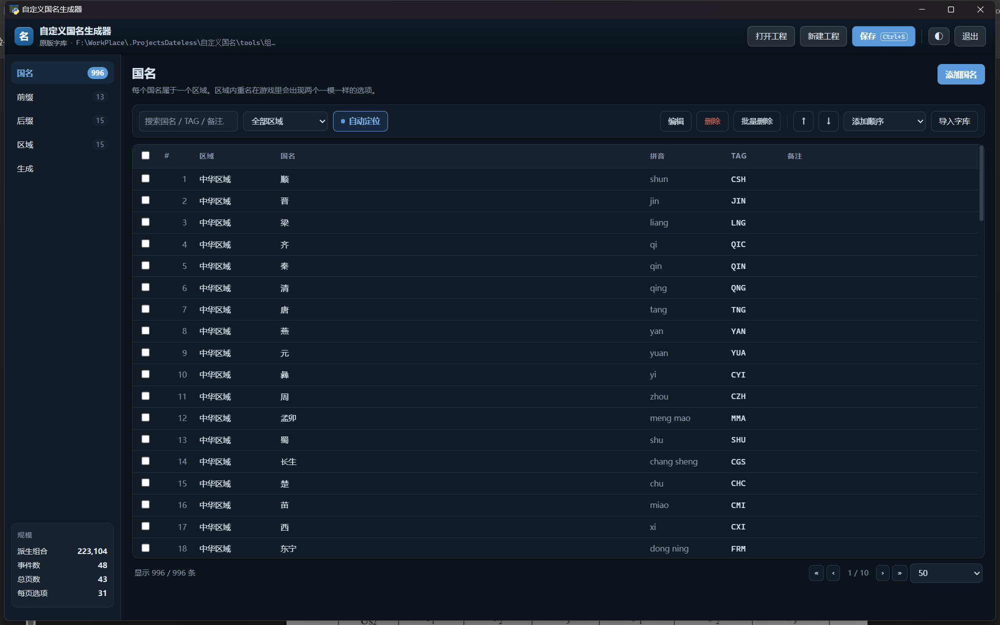
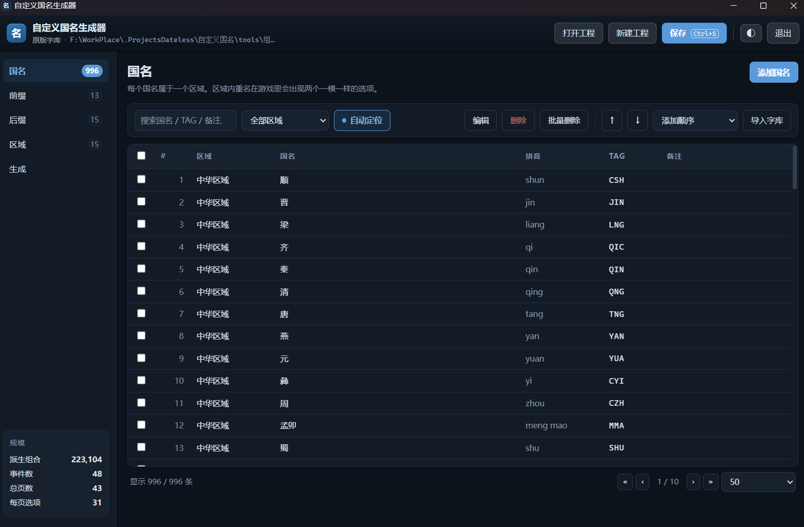
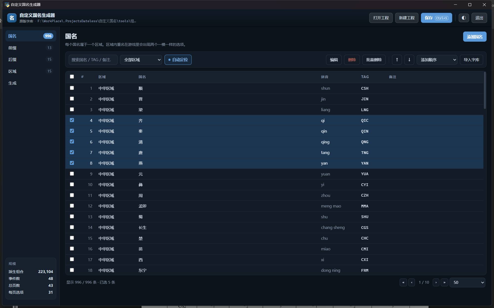
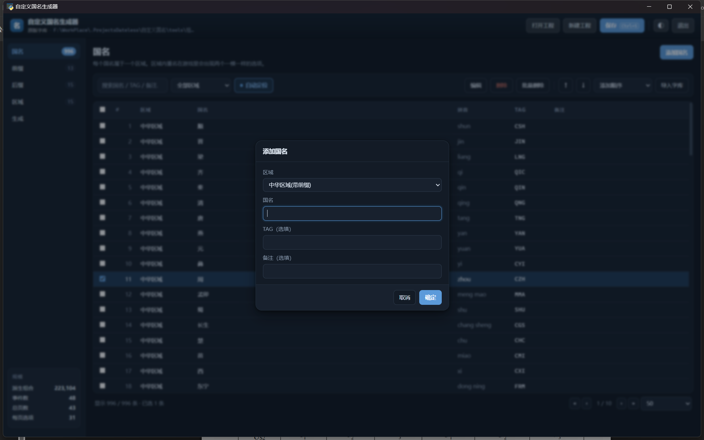
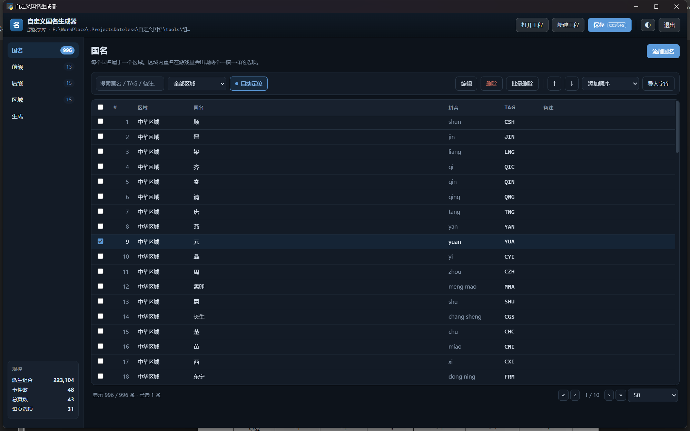
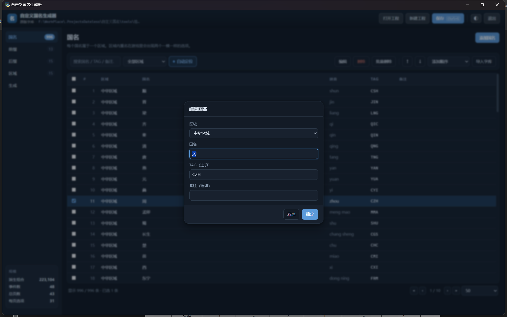
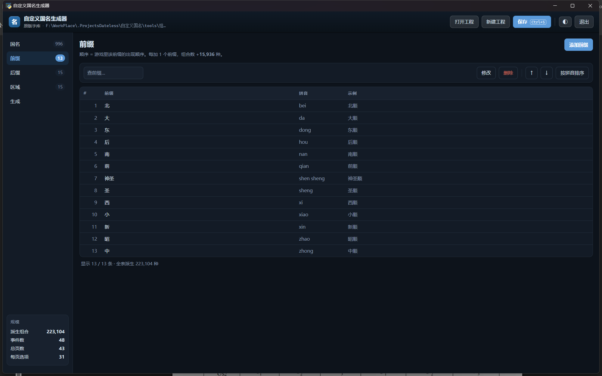
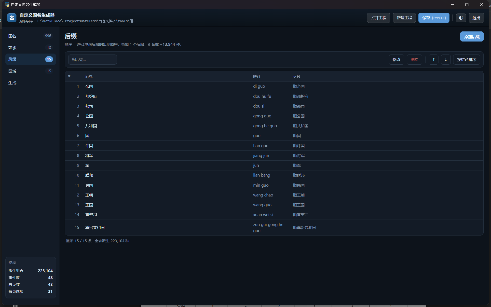
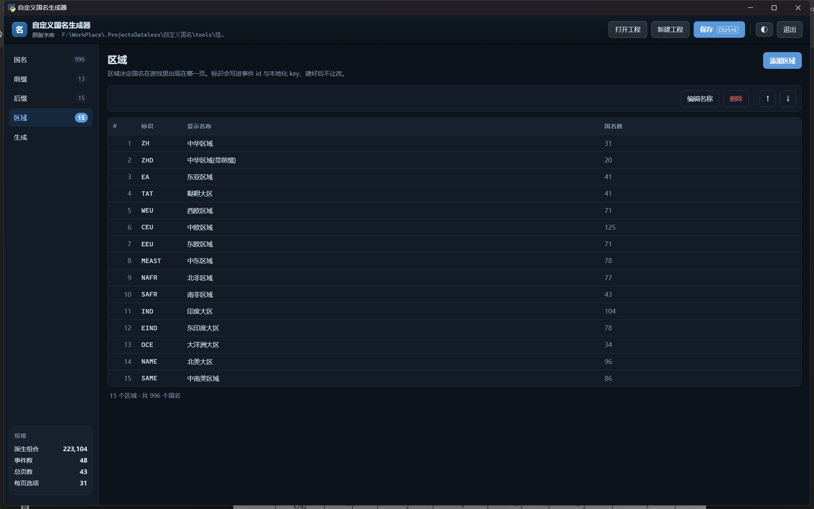
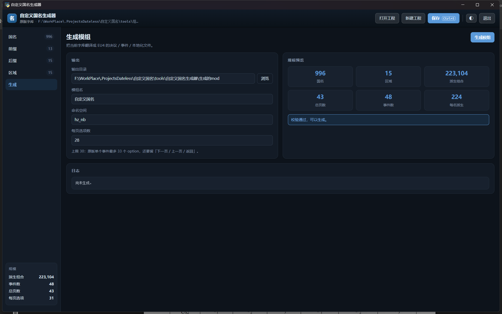

组词自定义国名工具 · 用户手册
欢迎使用组词自定义国名模组和工具！（暂不提供英文版）
给「组合造词国名」模组配字库的图形工具：管理国名 / 前缀 / 后缀 / 区域， 一键生成模组文件。本文讲怎么用；开发者文档见 README。
> 铁人模式用不了，联机要跟朋友交换工程文件 —— 这两条务必先看第 8 节。 > 只想赶紧上手的话，翻到第 8.1 节，四步就能生成。
手册里的截图都是真窗口的实拍，出自 shots.py 自动截图，跟着界面改版重跑即可。
1. 认识窗口
双击 组词自定义国名工具.exe 打开，长这样：

- 顶栏：重置路径 / 打开工程 / 新建工程 / 保存（Ctrl+S）/ 另存为 / 深浅主题切换 ◐ / 退出。
- 左侧页签：国名、前缀、后缀、区域、生成，名字旁边是各自的数量。
- 左下角「规模」：当前工程的预生成组合数、事件数、总页数、每页选项数， 改动字库后数字实时跟着变 —— 想知道「再加一个名字会多重」，看这里就行。
窗口是正经的桌面窗口，不是浏览器标签页；大小会自动记住，下次开还一样。
深色主题
点顶栏的 ◐ 切换深浅色，Windows 标题栏会一起变：

2. 国名页
日常待得最久的页签。表格列：#、区域、国名、拼音、TAG、备注。
找到要的那几条
- 搜索框：同时匹配国名 / TAG / 备注，边打边筛。
- 区域下拉：只看某一个区域。
- 分页：右下角 « ‹ › » 翻页，每页条数可选（50 / 100 / 200 / 500）。
选中与多选

- 单击选中一行，Shift + 单击 连选一段，行首复选框可以逐个勾。 注意：没有 Ctrl 逐个加选这回事，别按着 Ctrl 点了。
- 选中后整行变色，页脚显示「已选 N 条」。
添加国名

点页签右上角〔添加国名〕：区域已经替你选好上次用的那个， 光标直接落在国名输入框上 —— 连续往同一区域塞名字时不用每次重选。
自动定位（推荐开着）
工具栏上的开关，默认开。开了之后，每加完一条会自动翻到那一行所在的页、 选中它，并蓝闪 1.8 秒：

如果当前的搜索词或区域筛选正好把新行挡住了，会顺手把筛选清掉， 不然翻过去也看不见。开关状态会记住，重开程序还是上次的值。
编辑与删除

- 双击任意一行就是编辑（或选中一行点〔编辑〕）。
- 〔删除〕删掉勾选的行；〔批量删除〕支持按「当前筛选结果 / 区域内重名 / 全部」删， 清理重复项时用它。
排序
- 右上角排序下拉：一键按区域+拼音等规则整表重排。
- 〔↑〕〔↓〕把选中的一行单独上移 / 下移。
- 排序只影响游戏里出现的顺序，不影响「按添加顺序还原」—— 每条国名有个稳定的添加序号，随时可以从排序下拉里恢复。
导入字库
〔导入字库〕从「区域-tag-国名对照表.md」整表灌入，已存在的自动跳过。 第一次建工程用它最快。
3. 前缀页 / 后缀页


两个页签操作完全一样：添加 / 双击编辑 / 删除 / 上移下移 / 按拼音排序。 右侧「示例」列实时显示「前缀＋第一个国名」拼出来是什么样，不用脑补。
顺序 = 游戏里出现顺序：决议里选前缀时按这个列表从上往下排， 想把常用的放前面就挪上去（或排完拼音）。
4. 区域页

添加 / 改名 / 删除 / 上移下移。顺序 = 游戏里「选择区域」的弹出顺序， 同样是把常用的放前面。
区域「标识」只在大写字母 / 数字 / 下划线，它会写进事件 id 和本地化 key， 建好之后界面上不让改 —— 起名时想好。
5. 生成

| 字段 | 说明 |
|---|---|
| 输出目录（选择组词自定义国名模组文件夹） | 模组生成到哪，默认 生成的mod/（相对工具目录）。〔浏览〕弹资源管理器选文件夹；路径要是别人机器上的，用顶栏〔重置路径〕 |
| 模组名 | 显示在 EU4 启动器 playset 里的名字，默认「组词自定义国名」 |
| 命名空间 | 事件 id 前缀，别和别的模组撞即可 |
| 每页选项数 | 单个事件里最多列多少个国名（引擎硬限制 33，默认 28 留了余量） |
规模预览实时算出：预生成组合数、事件数、总页数、每页选项。
点〔生成模组〕后注意三件事：
- 生成器会先删掉输出目录里所有上一版生成的
hz_*文件再写新的， 所以输出目录里别放自己的东西。 - 生成完把输出目录挂进启动器 playset。
- 彻底重开游戏才生效 —— EU4 只在启动时读模组，Continue 旧存档没用。
> 铁人模式用不了（会改校验码），联机要跟朋友交换工程文件 —— 都在第 8 节。 > 不知道「模组文件夹」在哪，看第 7 节的 Q3。
规模参考：970 国名 / 8 前缀 / 8 后缀 ≈ 78,570 种组合、46 个事件、约 25 MB。 往区域里加名字是最便宜的扩容（不增加事件数），加前缀 / 后缀的组合数成本高得多。
6. 工程的保存与打开
- 所有内容存在一个
.hznproj工程文件里（UTF-8 JSON，手工可改）， 顶栏〔保存〕或 Ctrl+S 随时存。 - 〔打开工程〕和〔另存为〕都弹 Windows 资源管理器那套对话框 （选文件的那个窗口），起点就是
工程文件/目录，不用手抄路径。 另存为会以当前工程名预填文件名。 - 新建的工程第一次点〔保存〕时，因为没有落过盘，会自动转成〔另存为〕让你选位置。
- 工程文件默认落在
工程文件/，生成的模组默认落在生成的mod/。
打开工程之后注意看顶栏的路径和 toast 提示：工程的「名字」可能跟别的工程一样 （两个工程都叫「原版字库」很常见），光看名字会以为没打开。
路径都是「相对本工具」的
- 工程文件存在工具根目录下的
工程文件/里 —— 打开 / 另存为的对话框就是从 那儿开始的，不用去别处找。 - 输出目录默认是工具根目录下的
生成的mod/。 - 工程里存的是相对路径（比如
生成的mod），生成时才换算成本机绝对路径。 所以整个工具文件夹换个盘、改个名、拷给别人，路径都还指得对。 填绝对路径也行（比如直接指到 EU4 的 mod 文件夹），那就按你填的来。
〔重置路径〕——工程是从别人那儿拿来的就用它
工程文件里会带着上一个人机器上的路径。别人的输出目录可能是 D:\...\mod\组词自定义国名，而你这台机器根本没有 D 盘 —— 直接生成，模组会 落到一个莫名其妙的地方（或者干脆建目录失败）。
这时候点顶栏最左边的〔重置路径〕：把输出目录拉回你这台机器工具目录下的 生成的mod/，确认后点〔保存〕写回工程。以后再用就不必反复点了。
7. 常见问题
铁人模式可以用吗？
不可以。 选国名是靠一大批事件实现的，而加事件会改变校验码 —— 铁人模式的 存档校验不过，成就也拿不到。想玩铁人就别挂这个模组。
联机可以用吗？要注意什么？
可以，但双方的国名必须是同一套。联机前把你的 .hznproj 工程文件发给朋友， 让他用本工具重新生成一次模组文件（不是把生成的 mod 文件拷过去就算 —— 要走一遍 生成器，双方产物才逐字节一致）。详见 8.2 节。
怎么找到「模组文件夹」？
打开 P 社启动器 → 找到「组词自定义国名」这个 mod → 右边三个点 → 「在文件夹中显示」， 弹出来的就是你的模组文件夹。把它填进〔生成〕页的输出目录即可（见 8.1 节第 3 步）。
生成了但游戏里没变化？ 按顺序查：输出目录挂进当前使用的 playset 了吗 → 彻底重开游戏了吗 → 生成的模组在启动器里打勾了吗。EU4 只在启动时读模组。
界面提示找不到 pypinyin？ 国名排序退回了码点序。装一下就好：pip install pypinyin（exe 版自带，不受影响）。
左下角「预生成组合」数字怎么算的？ 每个区域的字数 ×（1 + 前缀数 + 后缀数 + 前缀×后缀）再对全部区域求和。 想控制规模，优先加国名，别急着加前后缀。
深色主题下标题栏没变？ 极少数机器上 DWM 设置会慢半拍，切一次主题来回就好。
8. 上手、联机与授权
8.1 四步上手
- 双击
组词自定义国名工具.exe打开。 - 改成你想要的前缀 / 国名 / 后缀。
- 点〔生成〕页，把输出目录改成你的「模组文件夹」（第 7 节 Q3 教了怎么找）。 也可以不改 —— 那就生成到工具目录下的
生成的mod/，完事自己复制过去覆盖。 - 点〔生成模组〕，模组就更新好了。
铁人模式的问题看第 7 节，联机的问题看 8.2。
8.2 联机：双方必须同一套国名
EU4 联机有校验码，所有人的模组内容必须完全一致。所以：
- 把你自己的
.hznproj工程文件发给朋友（就在工具目录的工程文件/里）。 - 朋友用本工具打开这个工程，点一下〔生成模组〕重新生成一次。 —— 关键是「走一遍生成器」，这样两边产物才逐字节相同；直接拷生成的 mod 文件夹过去也行，但一旦他改过字库就对不上了。
- 双方用同一份工程、同一次生成的结果进游戏。
工程里存的是相对路径，所以朋友拿到后先在〔生成〕页确认输出目录是他自己的 模组文件夹；要是指向了别人机器上的路径（比如你没有那个盘），点顶栏〔重置路径〕。
8.3 授权与说明
- 本工具为开源工具，请勿商用。
- 本工具和模组仅供交流学习与讨论，切勿上升现实。
- 想要更详细的说明，就是你现在看的这份
docs/用户手册.html。
生成之后找不到模组文件？ 看〔生成〕页输出目录框里填的是什么 —— 相对路径（如 生成的mod）就落在工具目录下。 要是那里填的是别人机器上的路径（比如你根本没有那个盘），点顶栏〔重置路径〕再生成一次。